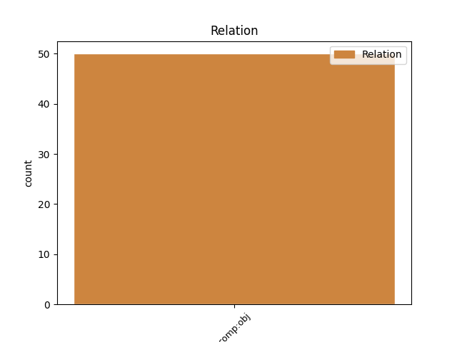
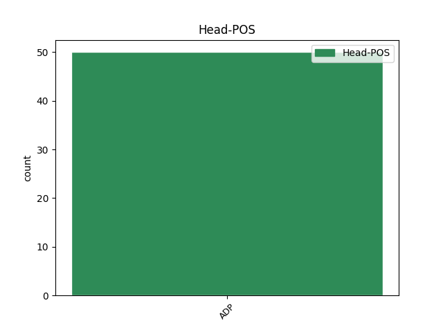
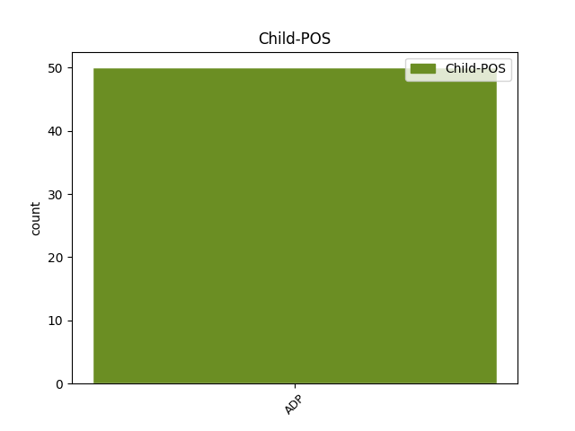

Distribution of features within this leaf



Agreement Rules sorted by frequency.
- When the dependent token is the direct object complements(comp:obj) of the head token, and the dependent token is ADP.
1 În _ _ _ _ 0 _ _ _
2 cazul _ _ _ _ 0 _ _ _
3 rotațiilor _ _ _ _ 0 _ _ _
4 , _ _ _ _ 0 _ _ _
5 biții _ _ _ _ 0 _ _ _
6 deplasați _ _ _ _ 0 _ _ _
7 în _ _ _ _ 0 _ _ _
8 afara _ _ _ _ 0 _ _ _
9 operandului _ _ _ _ 0 _ _ _
10 nu _ _ _ _ 0 _ _ _
11 sunt _ _ _ _ 0 _ _ _
12 pierduți _ _ _ _ 0 _ _ _
13 , _ _ _ _ 0 _ _ _
14 ca ca ADP Spsa AdpType=Prep|Case=Acc 0 _ _ _
15 în în ADP Spsa AdpType=Prep|Case=Acc 14 comp:obj _ _
16 cazul _ _ _ _ 0 _ _ _
17 deplasărilor _ _ _ _ 0 _ _ _
18 , _ _ _ _ 0 _ _ _
19 ci _ _ _ _ 0 _ _ _
20 sunt _ _ _ _ 0 _ _ _
21 rotiți _ _ _ _ 0 _ _ _
22 ( _ _ _ _ 0 _ _ _
23 circulați _ _ _ _ 0 _ _ _
24 ) _ _ _ _ 0 _ _ _
25 înapoi _ _ _ _ 0 _ _ _
26 către _ _ _ _ 0 _ _ _
27 celălalt _ _ _ _ 0 _ _ _
28 capăt _ _ _ _ 0 _ _ _
29 al _ _ _ _ 0 _ _ _
30 operandului _ _ _ _ 0 _ _ _
31 . _ _ _ _ 0 _ _ _
Disagree Examples:
1 Ochii _ _ _ _ 0 _ _ _
2 aceia _ _ _ _ 0 _ _ _
3 care _ _ _ _ 0 _ _ _
4 priveau _ _ _ _ 0 _ _ _
5 de de ADP Spsa AdpType=Prep|Case=Acc 0 _ _ _
6 deasupra deasupra ADP Spsg AdpType=Prep|Case=Gen 5 comp:obj _ _
7 unor _ _ _ _ 0 _ _ _
8 pomeți _ _ _ _ 0 _ _ _
9 uscați _ _ _ _ 0 _ _ _
10 se _ _ _ _ 0 _ _ _
11 întâlneau _ _ _ _ 0 _ _ _
12 din _ _ _ _ 0 _ _ _
13 când _ _ _ _ 0 _ _ _
14 în _ _ _ _ 0 _ _ _
15 când _ _ _ _ 0 _ _ _
16 cu _ _ _ _ 0 _ _ _
17 ai _ _ _ _ 0 _ _ _
18 lui _ _ _ _ 0 _ _ _
19 Winston _ _ _ _ 0 _ _ _
20 , _ _ _ _ 0 _ _ _
21 uneori _ _ _ _ 0 _ _ _
22 chiar _ _ _ _ 0 _ _ _
23 cu _ _ _ _ 0 _ _ _
24 o _ _ _ _ 0 _ _ _
25 ciudată _ _ _ _ 0 _ _ _
26 intensitate _ _ _ _ 0 _ _ _
27 , _ _ _ _ 0 _ _ _
28 pe _ _ _ _ 0 _ _ _
29 urmă _ _ _ _ 0 _ _ _
30 dispăreau _ _ _ _ 0 _ _ _
31 în _ _ _ _ 0 _ _ _
32 depărtare _ _ _ _ 0 _ _ _
33 . _ _ _ _ 0 _ _ _
1 Este _ _ _ _ 0 _ _ _
2 cunoscută _ _ _ _ 0 _ _ _
3 posibilitatea _ _ _ _ 0 _ _ _
4 ca _ _ _ _ 0 _ _ _
5 urina _ _ _ _ 0 _ _ _
6 de de ADP Spsa AdpType=Prep|Case=Acc 0 _ _ _
7 deasupra deasupra ADP Spsg AdpType=Prep|Case=Gen 6 comp:obj _ _
8 unui _ _ _ _ 0 _ _ _
9 obstacol _ _ _ _ 0 _ _ _
10 complet _ _ _ _ 0 _ _ _
11 să _ _ _ _ 0 _ _ _
12 fie _ _ _ _ 0 _ _ _
13 infectată _ _ _ _ 0 _ _ _
14 , _ _ _ _ 0 _ _ _
15 în _ _ _ _ 0 _ _ _
16 timp _ _ _ _ 0 _ _ _
17 ce _ _ _ _ 0 _ _ _
18 rezultatul _ _ _ _ 0 _ _ _
19 examenelor _ _ _ _ 0 _ _ _
20 microbiologice _ _ _ _ 0 _ _ _
21 ale _ _ _ _ 0 _ _ _
22 urinei _ _ _ _ 0 _ _ _
23 vezicale _ _ _ _ 0 _ _ _
24 să _ _ _ _ 0 _ _ _
25 arate _ _ _ _ 0 _ _ _
26 sterilitatea _ _ _ _ 0 _ _ _
27 lor _ _ _ _ 0 _ _ _
28 . _ _ _ _ 0 _ _ _
1 Întrucât _ _ _ _ 0 _ _ _
2 , _ _ _ _ 0 _ _ _
3 înlăturarea _ _ _ _ 0 _ _ _
4 lui _ _ _ _ 0 _ _ _
5 trebuie _ _ _ _ 0 _ _ _
6 să _ _ _ _ 0 _ _ _
7 întârzie _ _ _ _ 0 _ _ _
8 mai _ _ _ _ 0 _ _ _
9 mult _ _ _ _ 0 _ _ _
10 sau _ _ _ _ 0 _ _ _
11 mai _ _ _ _ 0 _ _ _
12 puțin _ _ _ _ 0 _ _ _
13 în _ _ _ _ 0 _ _ _
14 așteptarea _ _ _ _ 0 _ _ _
15 eliminării _ _ _ _ 0 _ _ _
16 spontane _ _ _ _ 0 _ _ _
17 a _ _ _ _ 0 _ _ _
18 unui _ _ _ _ 0 _ _ _
19 calcul _ _ _ _ 0 _ _ _
20 , _ _ _ _ 0 _ _ _
21 sau _ _ _ _ 0 _ _ _
22 în _ _ _ _ 0 _ _ _
23 vederea _ _ _ _ 0 _ _ _
24 instituirii _ _ _ _ 0 _ _ _
25 tratamentului _ _ _ _ 0 _ _ _
26 necesar _ _ _ _ 0 _ _ _
27 pentru _ _ _ _ 0 _ _ _
28 înlăturarea _ _ _ _ 0 _ _ _
29 sa _ _ _ _ 0 _ _ _
30 prin _ _ _ _ 0 _ _ _
31 mijloacele _ _ _ _ 0 _ _ _
32 indicate _ _ _ _ 0 _ _ _
33 de _ _ _ _ 0 _ _ _
34 la _ _ _ _ 0 _ _ _
35 caz _ _ _ _ 0 _ _ _
36 la _ _ _ _ 0 _ _ _
37 caz _ _ _ _ 0 _ _ _
38 , _ _ _ _ 0 _ _ _
39 se _ _ _ _ 0 _ _ _
40 impune _ _ _ _ 0 _ _ _
41 tratamentul _ _ _ _ 0 _ _ _
42 colicii _ _ _ _ 0 _ _ _
43 renale _ _ _ _ 0 _ _ _
44 în _ _ _ _ 0 _ _ _
45 prezența _ _ _ _ 0 _ _ _
46 hipertensiunii _ _ _ _ 0 _ _ _
47 de de ADP Spsa AdpType=Prep|Case=Acc 0 _ _ _
48 deasupra deasupra ADP Spsg AdpType=Prep|Case=Gen 47 comp:obj _ _
49 obstacolului _ _ _ _ 0 _ _ _
50 și _ _ _ _ 0 _ _ _
51 având _ _ _ _ 0 _ _ _
52 în _ _ _ _ 0 _ _ _
53 vedere _ _ _ _ 0 _ _ _
54 intensitatea _ _ _ _ 0 _ _ _
55 , _ _ _ _ 0 _ _ _
56 variabilă _ _ _ _ 0 _ _ _
57 după _ _ _ _ 0 _ _ _
58 cum _ _ _ _ 0 _ _ _
59 am _ _ _ _ 0 _ _ _
60 arătat _ _ _ _ 0 _ _ _
61 , _ _ _ _ 0 _ _ _
62 a _ _ _ _ 0 _ _ _
63 durerii _ _ _ _ 0 _ _ _
64 : _ _ _ _ 0 _ _ _